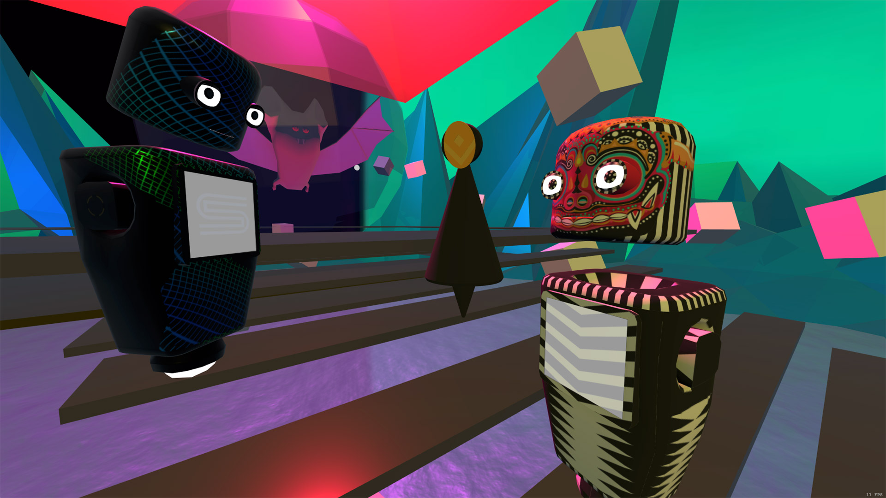
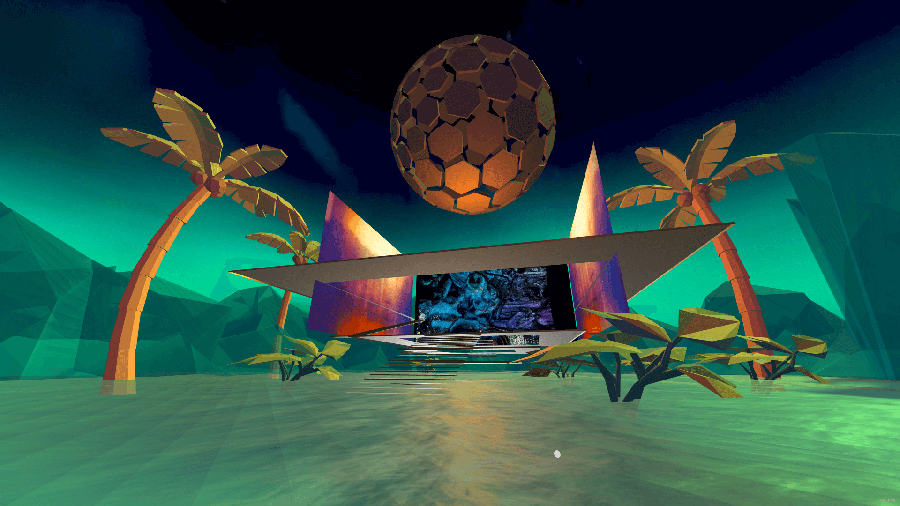

Virtual concerts in 3D venues
Conceptualized and led production on a platform for virtual concerts based on Mozilla Hubs Cloud, designed and built 3D venues and sets for the events in Blender, maintained AWS server infrastructure, set up live streaming via OBS Studio, 2020 - pres.
Stereoh is a startup aiming to offer innovative virtual concert experiences combining 3D venues and social avatars with live-streamed performances by underground dance music artists and DJs. The goal is to recreate the feel of a real-life club, where people can explore, socialize and enjoy music in most natural ways.
After joining the team at Stereoh I started by identifying Mozilla Hubs Cloud web VR platform as the best technological fit that would allow for fastest rollout and maximum convenience of user access. I collaborated with web developers and the CEO on conceptualizing the platform’s website, as well as designed several of the venues and built them in Blender. I also maintained AWS and Hubs Cloud back-end and created guidelines for live event video streaming via OBS Studio. The result was just 4 months from ideation to generating revenue via public event ticket sales and private corporate events.
Visit one of the venues I designed and modeled in Blender for Stereoh: SATURN6